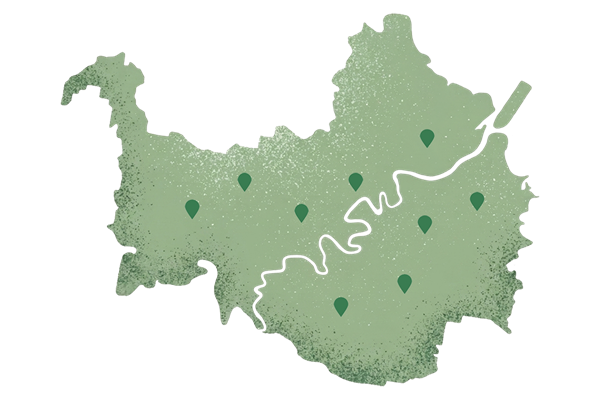
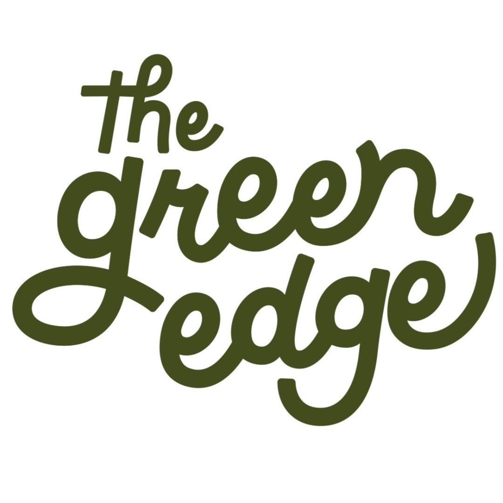
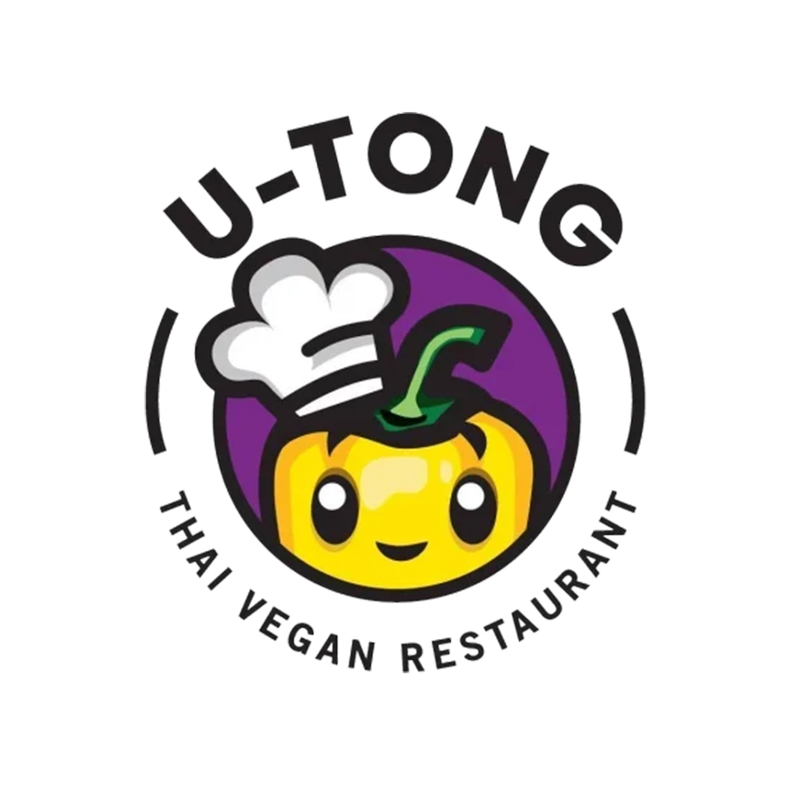
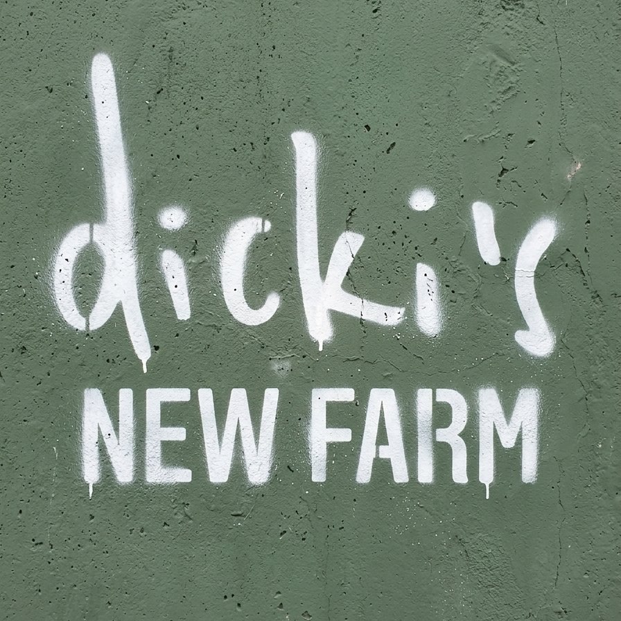
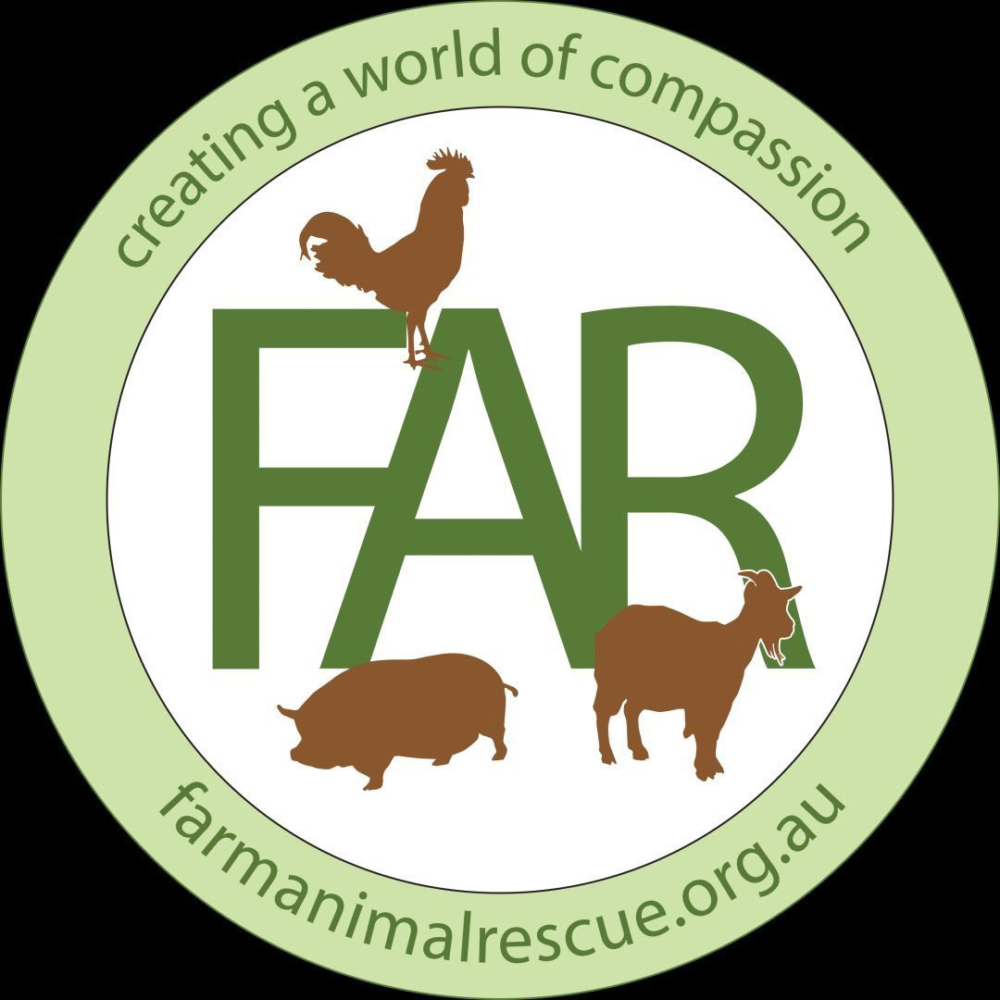
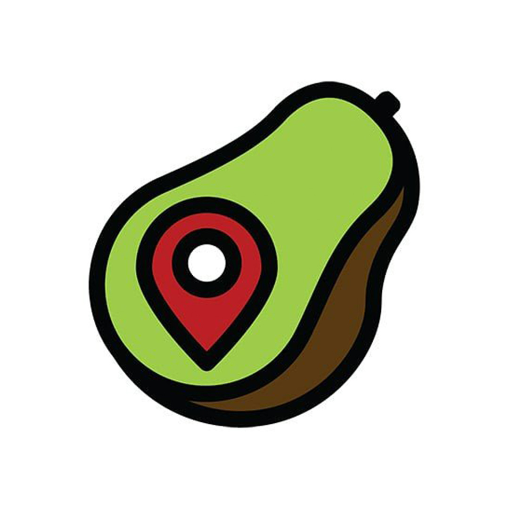
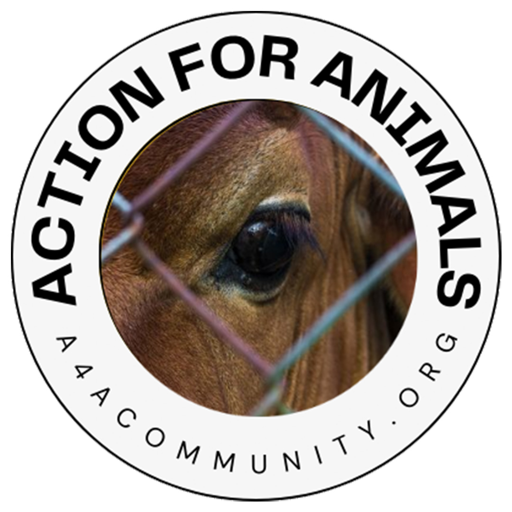
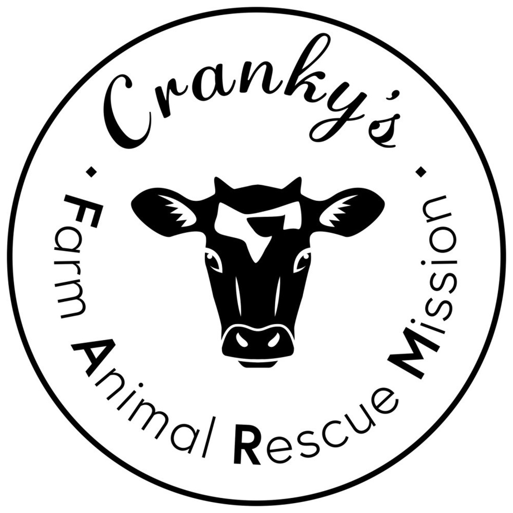

Brisbane Vegan Guide
Your compass to vegan living in Brisbane and surrounds
Discover the best vegan-friendly cafés, restaurants, sanctuaries, organisations, and inspiring people shaping the compassionate community of Brisbane — Meanjin.
Explore
01
Eat & Drink
Where flavour meets compassion

Bistro · Café · Deli
The Green Edge
📍 Windsor
An all-in-one vegan destination — bistro, café, deli, juice bar, ice cream shop, and grocery store under one roof.
Learn more

Thai Vegan
U-Tong
📍 Clayfield
Authentic Thai vegan flavours — curries, stir-fries, and soups bursting with fresh herbs, spice, and plant-based proteins.
Learn more
Vegan Cake Shop
Pippa's Pantry
📍 Camp Hill
A vegan cake, cupcake, and cookie shop specialising in custom celebration cakes — open limited hours, Friday and Saturday mornings.
Learn more

Vegan Café
Dicki's
📍 New Farm
Specialty-coffee café with all-day breakfast and lunch, smoothies, and custom cakes — a relaxed, dog-friendly spot with balcony seating.
Learn more
🌱
02
Community
Groups and organisations creating change

Sanctuary · Rescue
Farm Animal Rescue
📍 Dayboro, QLD
Sanctuary for rescued farm animals — offering tours, volunteering, sponsorship programs, and educational experiences.
Learn more

Guide · Travel
I Travel For Vegan Food
📍 Global (Brisbane-based)
Global vegan travel guide by a Brisbane local — restaurant reviews, city guides, and travel tips for plant-based adventurers worldwide.
Learn more

Activism · Community
Action for Animals Community
📍 Brisbane, QLD
Grassroots animal rights community organising peaceful protests, outreach events, and awareness campaigns across Brisbane.
Learn more

Animal Sanctuary
Cranky's Farm
📍 Mount Cotton, QLD
A loving sanctuary for rescued farm animals — goats, sheep, pigs, cows, and chickens living out their lives in peace with regular open days.
Learn more
🐾
03
People
Voices shaping the vegan movement
JG
Comedian & Influencer
Jakob Alan Guy
Aka Humane Vision — Brisbane comedian and social media influencer using humour and sharp content to make people laugh, think, and maybe reconsider their next meal.
Learn more
RH
Vegan Cook & Advocate
Renata Halpin
Vegan cook and advocate who shows how to veganise everyday recipes — supermarket tours included — and even ran a crowdfunding campaign for a vegan billboard in Toowoomba.
Learn more
CG
Community Organiser
Cameron Green
Co-organiser of Brisbane Vegan Meetup — the person who makes sure vegans in Brisbane actually get together, share meals, and build real connections.
Learn more
AB
Dietitian & Entrepreneur
Amanda Benham
Evidence-based dietitian and nutritionist, and founder of The Green Edge — proof that science and compassion go hand in hand.
Learn more
Explore more
Go deeper
📚
Vegan Kit
Essential questions and answers for anyone who wants to understand the basics of veganism, plus references for deeper reading on animal ethics and advocacy.
Explore →
🗺️
Vegan Map
An up-to-date map of all vegan places in Brisbane and surrounds — restaurants, cafés, shops, and more, all in one place.
Explore →
🔎
Vegan Finder
Filterable questions and answers to help you find exactly what you're craving — by cuisine, price, diet, or who you're eating with.
Explore →
🤝
Hire a Vegan
A directory of vegans in Brisbane offering all kinds of services — support the solidarity economy by hiring them and keeping it cruelty-free. If you're vegan in Brisbane, you can list yourself too.
Explore →